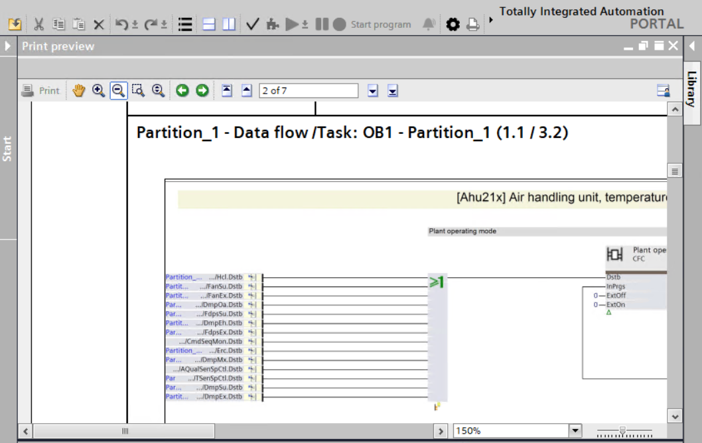
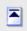

Print preview
You can preview the chart you want to print in the Print Preview window.

Print preview toolbar | Description |
|---|---|
Prints the docoument. | |
Navigation mode | Moves the display detail of the current print document if it is larger than the print preview window. |
Zoom in | Magnifies the page display. |
Zoom out | Reduces the page display. |
Zoom in with selection | Enlarges a particular area on the screen when a frame is dragged around it. |
Zoom in/Zoom out dynamically | Magnifies or reduces the page display. |
Backward | Displays the last page viewed. |
Forward | Displays the next page. |
 First page | Displays the first page of the print preview. |
Previous page | Displays the previous page of the print preview. |
Next page | Displays the next page of the print preview. |
Last page | Displays the last page of the print preview. |
- Open the programming editor for a plant.
- The print option
 enables in the toolbar.
enables in the toolbar. - Click .
- The Print window displays.
- Click Preview.
- The Print preview window displays.
- Use the different navigation options in the preview screen to navigate through the print preview.